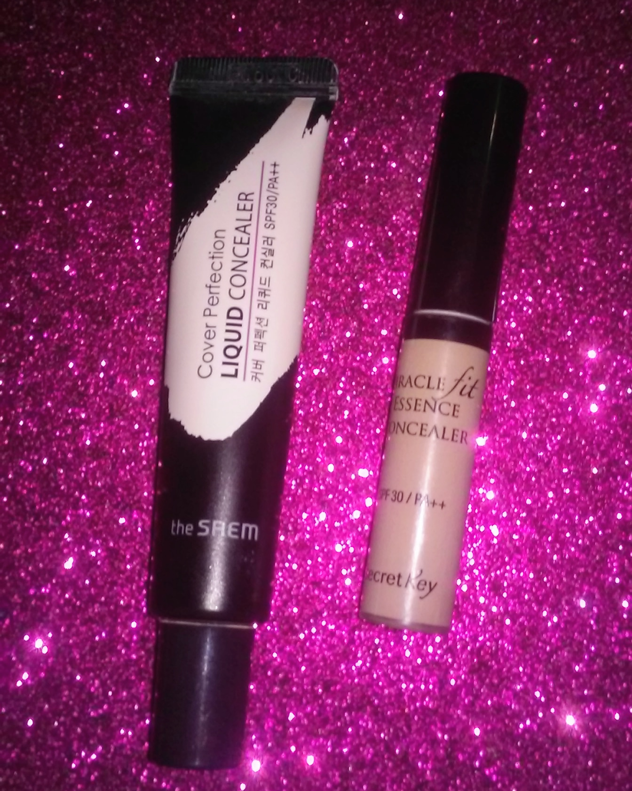
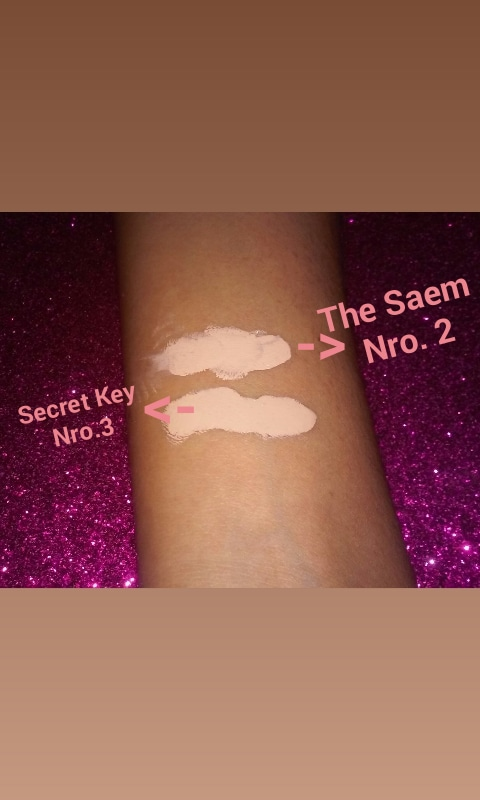

Diferencias entre corrector The Saem y Secret Key
El corrector de Secret Key ¨Miracle Fit Essence Concealer¨ a primera vista el tamaño (6g) es perfecto para llevar en el bolso o en un estuche de maquillaje pequeño y contiene protector solar de 30spf, promete cubrir todas las imperfecciones con un acabado limpio pero en verdad a mi parecer su cobertura no es tan buena como promete ser y puede llegar a cuartiarse y marcar las lineas de expresion en el transcurso del dia.
El corrector de The Saem ¨Cover Perfection Liquid Concealer¨ a primera vista tiene tambien una buen tamaño(15ml) para llevar en el bolso, contiene al igual que el de Secret Key potector solar de 30spf. Promete tener una buena covertura y ser de larga duracion(Long lasting). A decir verdad este corrector tiene muy buena cobertura, puede llegar a durar mucho tiempo y no se cuartea, cabe a destacar que este concealer a llegado a ser comparado con el de NAKED.
Ahora comparando los dos, el corrector de The Saem me parece ser una mejor obción de compra si estas buscando un corrector con buena cobertura, larga duracion y que no se cuartea en el transcurso del dia; el de Secret Key lo recomiendo para el uso sobre pieles grasas y no tan maduras, que no tengan muchas lineas de exprecion. Me despido, y comenten su opinion si ya han comprado alguno de estos dos concealer!